115 — Arquitectura dirigida por eventos y contratos
Parte: 09 — Datos, mensajería, serverless e integración
Nivel: avanzado · Horas estimadas: 4
Laboratorio: architecture · Estado: EXECUTABLE_CORE
🎯 Propósito
Diseñar el contenido de los hechos que viajan por el registro de la clase 114, que es donde se decide si una arquitectura de eventos desacopla de verdad o solo cambia el acoplamiento de sitio. La clase distingue tres cosas que se llaman igual y no lo son, establece que el esquema del evento es una interfaz pública con más obligaciones que una API, porque el registro conserva mensajes más viejos que cualquier versión del código, y afronta el precio que nadie anuncia: cuando nadie orquesta, nadie sabe responder dónde está el pedido 1421.
📚 Resultados de aprendizaje
Al finalizar podrás:
- Distinguir notificación, transferencia de estado y comando disfrazado.
- Redactar eventos como hechos, con envoltura estándar y contenido acotado.
- Evolucionar un esquema conservando compatibilidad en las dos direcciones.
- Elegir entre coreografía y orquestación sabiendo qué se paga.
- Evitar que el esquema interno de una base de datos se convierta en contrato público.
🧩 Conceptos centrales
| Concepto | Comprensión verificable |
|---|---|
notificación |
Aviso mínimo de que algo pasó; el consumidor consulta al origen para saber más. Poco tráfico, y devuelve el acoplamiento en tiempo de ejecución. |
transferencia de estado |
El evento lleva el estado resultante completo. El consumidor no necesita preguntar nada, y a cambio recibe mucho más dato. |
comando disfrazado |
Mensaje en imperativo con forma de evento. El productor decide qué debe hacer el consumidor, que es justo lo que se quería evitar. |
compatibilidad en dos direcciones |
Un consumidor nuevo debe leer mensajes viejos y uno viejo debe tolerar mensajes nuevos. Con registros conservados hacen falta las dos. |
envoltura |
Metadatos comunes a todos los eventos: identificador, tipo, momento, origen, sujeto, versión y traza. Se estandariza una vez para toda la organización. |
coreografía |
Cada servicio reacciona a los hechos sin que nadie dirija. Escala organizativamente y hace muy difícil saber el estado de un proceso completo. |
🧠 Modelo mental
La base de datos correcta depende del patrón de acceso y de las garantías necesarias; distribuir datos convierte latencia, consistencia y fallos parciales en decisiones de diseño.
Aplicado a esta clase, separa siempre cuatro planos: intención (qué necesita el usuario), configuración (qué declaramos), estado observado (qué existe de verdad) y evidencia (cómo sabemos que cumple). Confundirlos produce diseños que se ven correctos en un diagrama pero fallan al operar.
🗺️ Flujo de razonamiento

📖 Desarrollo
1. Tres cosas que se llaman evento
La mayor parte de los problemas de una arquitectura de eventos vienen de mezclar estas tres:
NOTIFICACIÓN
{"tipo":"pedido.pagado", "pedido":"1421"}
+ mínimo tráfico; el productor no expone su modelo
− el consumidor tiene que llamar al origen para saber algo
− y entonces el origen tiene que estar disponible: acoplamiento en ejecución
TRANSFERENCIA DE ESTADO
{"tipo":"pedido.pagado", "pedido":{ … estado completo … }}
+ el consumidor es autosuficiente y puede procesar en diferido
+ soporta que el origen esté caído
− más tráfico, y expone parte del modelo del productor
COMANDO DISFRAZADO
{"tipo":"debe.enviarse.el.pedido", …}
→ no es un evento: es una orden con otro nombre
→ el productor está decidiendo qué hace el consumidor
La tercera es la que arruina el diseño sin que se note. La prueba para detectarla:
¿el nombre está en pasado y describe algo que YA ocurrió?
sí → evento; el productor no sabe quién lo consume ni le importa
no → comando; va a una cola, con un destinatario concreto
Y la elección entre las dos primeras, que es real y se decide por caso:
notificación cuando el dato es grande, cambia mucho
o es sensible
transferencia de estado cuando el consumidor debe poder trabajar sin
el origen, o el proceso es diferido
Y una tercera vía muy usada y muy útil: notificación con lo suficiente. Se incluye lo que el 90 % de los consumidores necesita y se deja el resto tras una consulta. La forma sana de decidirlo es preguntar a los consumidores, que es lo que el apartado tercero convierte en obligación.
La envoltura, que conviene estandarizar una vez para toda la organización:
{
"id": "e-9f2c41…",
"tipo": "pedido.pagado",
"version": 2,
"momento": "2026-08-03T09:14:22Z",
"origen": "servicio-pedidos",
"sujeto": "pedido/1421",
"traza": "00-a91c…-b7f2…-01",
"clave_idempotencia": "pago-1421-3",
"datos": { … }
}
Y cada campo está por un motivo concreto:
id permite detectar repeticiones (clase 113)
tipo y versión permiten evolucionar sin romper
momento el del HECHO, no el de la publicación: son distintos
sujeto permite filtrar sin abrir el contenido
traza enlaza el evento con la petición que lo originó
clave_idempotencia la desarrolla la clase 116
La diferencia entre momento del hecho y momento de publicación importa más de lo que parece: en un reproceso, el segundo cambia y el primero no.
2. El esquema es una interfaz pública
Un evento publicado lo leen equipos que no conoces, con código que no controlas, y —esto es lo específico de la clase 114— mensajes escritos hace treinta días siguen ahí. Eso obliga a más que una API.
en una API conviven la versión N y la N+1 unos días
en un registro conviven mensajes de TODAS las versiones publicadas
durante todo el periodo de retención
y consumidores que aún no se han actualizado
De ahí que hagan falta las dos direcciones a la vez:
HACIA ATRÁS el consumidor NUEVO lee mensajes VIEJOS
→ necesario para reprocesar el histórico
HACIA DELANTE el consumidor VIEJO tolera mensajes NUEVOS
→ necesario porque no se puede desplegar a todos a la vez
Y las reglas que las conservan:
SE PUEDE
añadir un campo OPCIONAL con valor por defecto
añadir un valor nuevo a una enumeración, si los consumidores
tienen un caso «desconocido»
añadir un tipo de evento nuevo
NO SE PUEDE
quitar un campo
renombrar un campo
cambiar el tipo de un campo
convertir en obligatorio uno que era opcional
cambiar el significado de un campo sin cambiar su nombre ← el peor
El último es el más dañino porque ninguna herramienta lo detecta: el esquema sigue validando y los consumidores interpretan mal. Si importe pasa de incluir impuestos a no incluirlos, hay que cambiar el nombre.
Y cuando hay que hacer algo de la lista prohibida, el procedimiento es el de la clase 102 —expandir y contraer— aplicado a eventos:
1. publicar el campo nuevo junto al viejo
2. esperar a que todos los consumidores usen el nuevo, y comprobarlo
3. dejar de publicar el viejo, cuando ya no queden mensajes con él
dentro de la retención
El paso 3 tiene aquí una condición extra: hay que esperar además a que expire la retención, o un reproceso encontrará mensajes sin el campo nuevo.
El registro de esquemas es lo que convierte estas reglas en algo que se cumple:
guarda el esquema de cada tipo y versión
valida en el momento de PRODUCIR, no de consumir
rechaza los cambios incompatibles antes de publicarlos
La segunda línea es la importante: validar al consumir llega tarde, porque el mensaje malo ya está en el registro y seguirá ahí durante toda la retención.
Y una obligación organizativa que hace posible todo lo anterior: el productor tiene que saber quién le consume. No para pedirle permiso, sino para poder avisar y para poder comprobar el paso 2.
catálogo por tema: quién produce, quién consume, desde cuándo
→ es el catálogo de la clase 095, con una columna más
3. Coreografía, orquestación y el pedido 1421
Con hechos publicados, hay dos formas de que un proceso de negocio avance:
COREOGRAFÍA
cada servicio escucha y reacciona; nadie dirige
+ los equipos avanzan sin coordinarse
+ añadir un participante no toca a nadie
− nadie conoce el proceso completo
− y nadie puede responder «¿dónde está el pedido 1421?»
ORQUESTACIÓN
un componente conoce los pasos y los invoca
+ el proceso está en un sitio, legible y consultable
+ los fallos y compensaciones tienen dueño
− ese componente acopla a todos los participantes
− y crece hasta contener la lógica de negocio de todos
Y el criterio práctico, que no es elegir una:
entre equipos y entre dominios coreografía
dentro de un proceso de negocio con
pasos, plazos y compensaciones orquestación
La segunda es la clase 119, y las compensaciones son la 116.
Y el precio de la coreografía hay que pagarlo explícitamente, porque no se paga solo:
sin nada nadie sabe en qué paso está un pedido, ni por qué se paró
con lo mínimo la traza viaja en la envoltura, y hay una vista que
reúne todos los eventos de un sujeto
Y esa vista —«dame todo lo que le ha pasado al pedido 1421»— es obligatoria en una arquitectura coreografiada. Sin ella, el diagnóstico de cualquier incidente consiste en preguntar a seis equipos.
lo mínimo que hace falta
identificador de traza en todos los eventos del proceso
campo sujeto uniforme: «pedido/1421»
un sitio donde consultar por sujeto y ver la secuencia con tiempos
y qué se esperaba y no llegó
La última línea es la difícil: en coreografía, que un paso no ocurra no produce ningún error. Es la ley 13 en versión de negocio, y la única defensa es un vigilante de plazos:
si «pedido.pagado» no va seguido de «pedido.preparado» en 30 min
→ alguien tiene que enterarse
Y dos antipatrones frecuentes de la coreografía:
BUCLE DE EVENTOS A reacciona a B y B reacciona a A
→ se detecta contando saltos en la traza
CASCADA INVISIBLE un evento dispara once consumidores y nadie lo sabía
→ el catálogo de consumidores lo hace visible
4. No publiques tu base de datos
Hay una forma muy cómoda de empezar a publicar eventos: leer el registro de cambios de la base de datos y publicar cada fila modificada. Es potente y tiene una trampa grande.
lo que se publica filas de tus tablas
lo que eso significa tu esquema interno pasa a ser contrato público
consecuencia no puedes renombrar una columna sin romper
a cuatro equipos
Y además de eso:
el consumidor recibe cambios de FILAS, no hechos de negocio
→ «cambió la columna estado de 3 a 4»
→ y tiene que saber qué significa 4, que es conocimiento tuyo
un hecho de negocio suele tocar varias tablas
→ llegan varios eventos y ninguno es el hecho
se publican también las correcciones y las migraciones
→ una migración que toca 4 millones de filas publica 4 millones de eventos
Dónde sí encaja la captura de cambios:
sí replicar hacia un lago o un almacén analítico (clase 112)
alimentar un índice de búsqueda
sacar datos de un sistema heredado que no se puede modificar
no como contrato de eventos de negocio entre equipos
Y la forma correcta cuando se quiere garantizar que el evento se publica si y solo si el cambio se guardó: escribir el evento en la misma transacción que el cambio, en una tabla propia, y publicarlo desde ahí. Eso es el patrón de la clase 116, y aquí basta saber que existe y que es distinto de publicar filas.
captura de cambios publica lo que cambió en las tablas
tabla de salida publica el HECHO que tú redactaste,
con la garantía de que se guardó con el cambio
Y el tamaño del evento, que decide más de lo que parece:
muy pequeño obliga a consultar; devuelve el acoplamiento
muy grande lleva datos que nadie usa, y los sensibles viajan
por donde no deberían
adecuado lo que necesitan la mayoría de los consumidores conocidos
Y sobre los datos personales dentro de eventos, una advertencia con consecuencias legales: un registro conservado es inmutable y difícil de purgar. Publicar identificadores y dejar los datos personales en el origen evita el problema; publicarlos dentro lo garantiza.
Y la lista de comprobación de la clase:
☐ todos los eventos tienen nombre de hecho en pasado
☐ ningún «evento» dice al consumidor lo que tiene que hacer
☐ la envoltura es la misma en toda la organización
☐ el momento del hecho está separado del de publicación
☐ el esquema está en un registro y se valida al producir
☐ los cambios conservan compatibilidad en las dos direcciones
☐ ningún campo cambia de significado sin cambiar de nombre
☐ hay catálogo de quién produce y quién consume cada tema
☐ existe una vista por sujeto con la secuencia completa y sus tiempos
☐ hay vigilancia de pasos que no ocurren dentro de su plazo
☐ no se publican filas de tablas como contrato de negocio
☐ los datos personales no viajan dentro de eventos conservados
Y el cierre que enlaza con la clase siguiente: queda el problema que las clases 113 y 114 han ido aplazando —cómo se garantiza que un hecho se publica exactamente si el cambio se guardó, y cómo se repite una operación sin duplicar su efecto—, y es la materia de la clase 116.
🔬 Ejemplo trabajado
CloudShop lleva ocho meses publicando eventos de pedido. Tres equipos consumen. El ejercicio son los cuatro problemas que aparecieron y lo que cada uno obligó a cambiar en el contrato.
Problema 1: un cambio de esquema rompe a cuatro equipos en veinte minutos.
cambio el campo «importe» pasa de céntimos a unidades
motivo «era confuso»
revisión aprobada por el equipo productor
consumidores avisados 0
consumidores que existían 4
14:02 se despliega el productor
14:04 facturación emite facturas con importes 100 veces menores
14:11 analítica publica un panel con ingresos del 1 %
14:19 detectado por una persona de finanzas
14:40 revertido
facturas erróneas emitidas 1.204
rectificativas necesarias 1.204
El esquema seguía validando: el tipo era el mismo y solo cambió el significado, que es el caso que ninguna herramienta detecta.
Las tres correcciones:
```text antes después registro de esquemas no sí validación de compatibilidad en la canalización no sí cambio de significado mismo nombre nombre nuevo (importe_centimos) catálogo de consumidores por tema no sí
Y la comprobación de compatibilidad detectó, al implantarla, **otros seis cambios pendientes de despliegue** que habrían roto a alguien.
**Problema 2: nadie sabe dónde está el pedido 1421.**
```text
reclamación de un cliente: «hice el pedido hace 3 días y no llega»
equipos consultados para responder 6
tiempo hasta poder responder 2 h 40
causa encontrada un evento se procesó y el consumidor de
preparación estaba parado desde hacía 19 h
quién lo sabía nadie: un consumidor parado no da error
Es la ley 13 en versión de negocio. Lo que se construyó:
vista por sujeto: todos los eventos de «pedido/1421» con tiempos
vigilante de plazos: 7 pares de eventos con su tiempo máximo
alerta cuando el segundo no llega
```text antes después tiempo hasta responder «¿dónde está?» 2 h 40 40 s procesos parados detectados por el vigilante — 11 en 6 meses de ellos, detectados antes por otro medio — 2
Nueve de once **solo se detectaron por el vigilante de plazos**.
**Problema 3: la captura de cambios que se convirtió en contrato.**
El equipo de búsqueda pidió los cambios del catálogo y se le dio acceso al flujo de captura de cambios de la base de datos.
```text
lo que recibía filas de la tabla «productos»
a los 5 meses 3 equipos consumiendo lo mismo
intento de renombrar
una columna interna bloqueado: rompía a los 3
migración de 4,1 M de
filas para un ajuste publicó 4,1 M de eventos
→ el consumidor de búsqueda tardó 9 h en digerirlos
→ y reindexó todo el catálogo sin motivo
La corrección fue publicar hechos redactados, no filas:
```text captura de cambios hechos redactados lo que viaja filas de la tabla producto.publicado producto.retirado producto.reprecio esquema interno como contrato sí no eventos por migración de 4,1 M filas 4,1 millones 0 equipos bloqueados por renombrar 3 0
Y la captura de cambios se conservó para lo que sí encaja: **alimentar el lago de la clase 112**.
**Problema 4: el comando disfrazado.**
```text
tema publicado «pedido.debe.enviarse»
consumidor un solo servicio, el de logística
qué pasó logística cambió su proceso y necesitaba dos pasos
→ pidió al equipo de pedidos que publicara
«pedido.debe.empaquetarse» primero
El equipo de pedidos estaba tomando decisiones sobre el proceso de logística. El diagnóstico con la prueba del apartado primero:
¿está en pasado y describe algo ocurrido? no: es un imperativo
→ no es un evento
```text antes después lo que publica pedidos pedido.debe.enviarse pedido.pagado quién decide los pasos de logística pedidos logística cambios en logística que exigen tocar pedidos todos ninguno consumidores del hecho 1 3
La última fila fue la sorpresa: al publicar el hecho en vez de la orden, **dos equipos más lo consumieron** sin que nadie tuviera que hacer nada.
**El tamaño del evento, decidido preguntando.**
```text
propuesta inicial notificación mínima: solo el identificador
consultado a los 3 consumidores conocidos:
facturación necesita importe, impuestos y cliente
analítica necesita todo lo anterior y el canal
búsqueda no consume este evento
decisión incluir lo que necesitan los dos, y nada más
tamaño medio 1,8 KB
consultas al origen tras el cambio de 12.000/día a 40/día
A los seis meses.
```text antes después registro de esquemas no sí cambios incompatibles llegados a producción 1 grave 0 (6 bloqueados) catálogo de productores y consumidores no sí vista por sujeto no sí tiempo hasta responder «¿dónde está?» 2 h 40 40 s procesos parados detectados 0 11 / 6 meses comandos disfrazados de evento 3 0 temas que publican filas de tablas 2 0 (1 al lago) consultas al origen por evento pequeño 12.000/día 40/día
**La lección que esta clase traslada a la parte 09**: los cuatro problemas eran de contrato, no de infraestructura. El registro de la clase 114 funcionaba perfectamente en los cuatro casos. Y el más caro —mil doscientas facturas rectificativas— lo causó **un cambio que todas las validaciones automáticas consideraban compatible**, porque el tipo del campo no cambió: solo su significado. Contra eso, la única defensa que funcionó fue organizativa: saber quién consume y avisarle.
## 🧪 Laboratorio guiado
Ejecuta desde la raíz:
```bash
python classes/part-09-data-messaging-serverless-integration/115-arquitectura-dirigida-por-eventos-y-contratos/lab.py
El laboratorio selecciona el motor de práctica architecture y produce
lab_result.json. El escenario, sus comprobaciones y el artefacto esperado corresponden a
esta clase; no requiere credenciales y deja explícito qué debe revalidarse en un sandbox real.
- Lee
exercise.stepsy formula una predicción antes de ejecutar. - Ejecuta la práctica y verifica todos los elementos de
checks. - Provoca el caso de
negative_testy explica la señal observada. - Materializa
catalogo-eventosenevidence/usando la plantilla indicada. - Para proveedor real, sigue
sandbox.requires, registra costo y ejecutadestroy.
Evidencia esperada
El artefacto principal es un diagrama acompañado por decisiones y trade-offs. Además, la entrega debe incluir el comando ejecutado, la salida estructurada y una conclusión que no exceda lo observado.
🏆 Reto verificable
Construye catalogo-eventos para el caso CloudShop. Incluye una alternativa descartada,
un supuesto que pueda falsarse, una prueba de fallo y una decisión de rollback.
✅ Criterio de aceptación
- [ ]
lab.pytermina con código 0 y genera JSON válido. - [ ] La entrega conecta al menos tres requisitos con mecanismos verificables.
- [ ] Existe una prueba positiva y una prueba negativa con evidencia.
- [ ] Seguridad, costo y operación aparecen como decisiones, no como anexos.
- [ ] Se declara una limitación y una condición que obligaría a revisar el diseño.
- [ ] Otra persona puede repetir el recorrido sin conocimiento tácito.
⚠️ Errores frecuentes
| Síntoma | Causa probable | Corrección |
|---|---|---|
| Un cambio de esquema que valida correctamente rompe a los consumidores | Cambió el significado del campo sin cambiar su nombre, y eso ninguna herramienta lo detecta | Si cambia el significado, cambia el nombre; y mantén catálogo de consumidores para avisar. |
| Nadie puede decir en qué paso está un proceso | Coreografía sin vista por sujeto ni vigilancia de plazos | Identificador de traza y sujeto uniformes en la envoltura, vista por sujeto y alerta cuando un paso esperado no llega a tiempo. |
| No se puede renombrar una columna interna sin romper a otros equipos | Se publican filas de tablas, así que el esquema interno es contrato público | Publica hechos de negocio redactados; deja la captura de cambios para alimentar el lago. |
| Una migración de datos genera millones de eventos y satura a los consumidores | Los eventos salen del registro de cambios de la base, no de hechos de negocio | Publica hechos, y si hay que reprocesar, hazlo por un canal separado y anunciado. |
| El productor tiene que cambiar cada vez que cambia el proceso del consumidor | Está publicando comandos disfrazados de eventos | Publica hechos en pasado; si el mensaje dice qué hacer, va a una cola con destinatario. |
| Un reproceso del histórico falla porque faltan campos | Se retiró un campo antes de que expirara la retención del registro | En expandir y contraer sobre registros conservados, espera además a que caduquen los mensajes con el formato antiguo. |
🛡️ Seguridad, ética y costo
Trabaja con cuentas propias o sandboxes autorizados. No publiques secretos, identificadores reales ni datos personales. Antes de crear recursos pagos define presupuesto, etiquetas y comando de destrucción; después verifica que no queden recursos huérfanos. Los ejemplos locales enseñan contratos, pero no certifican cumplimiento ni disponibilidad de producción.
❓ Preguntas de comprobación
- ¿Qué prueba distingue un evento de un comando disfrazado?
- ¿Por qué un registro conservado exige compatibilidad en las dos direcciones?
- ¿Qué cambio de esquema es el más peligroso y por qué no lo detecta ninguna herramienta?
- ¿Qué es obligatorio construir si se elige coreografía?
- ¿Cuándo encaja la captura de cambios y cuándo no debe usarse?
🔗 Referencias
- CloudEvents (2025). Specification — envoltura común: identificador, tipo, origen, sujeto y momento. https://github.com/cloudevents/spec/blob/main/cloudevents/spec.md
- Fowler, M. (2025). What do you mean by event-driven? — notificación, transferencia de estado y sus consecuencias. https://martinfowler.com/articles/201701-event-driven.html
- Confluent (2025). Schema Registry: compatibility types — compatibilidad hacia atrás, hacia delante y completa. https://docs.confluent.io/platform/current/schema-registry/fundamentals/avro.html
- Richardson, C. (2025). Saga and event choreography trade-offs — coreografía frente a orquestación. https://microservices.io/patterns/data/saga.html
- Debezium (2025). Change data capture: when to use it — límites de publicar cambios de filas como contrato. https://debezium.io/documentation/reference/stable/architecture.html
- Documentación oficial vigente del servicio implementado; registra URL y fecha de consulta.
📥 Descargar: Parte 09 en PDF · Manual integral